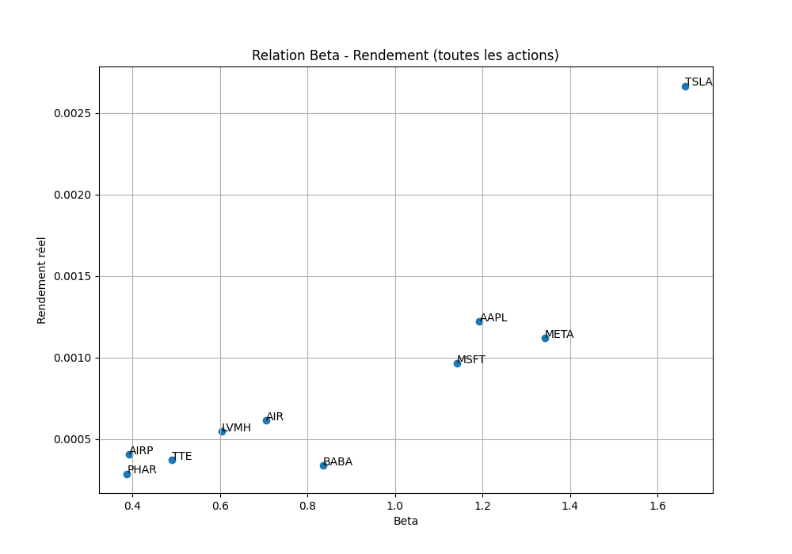
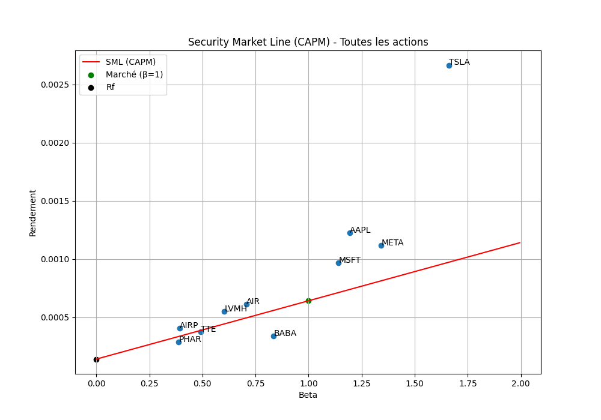
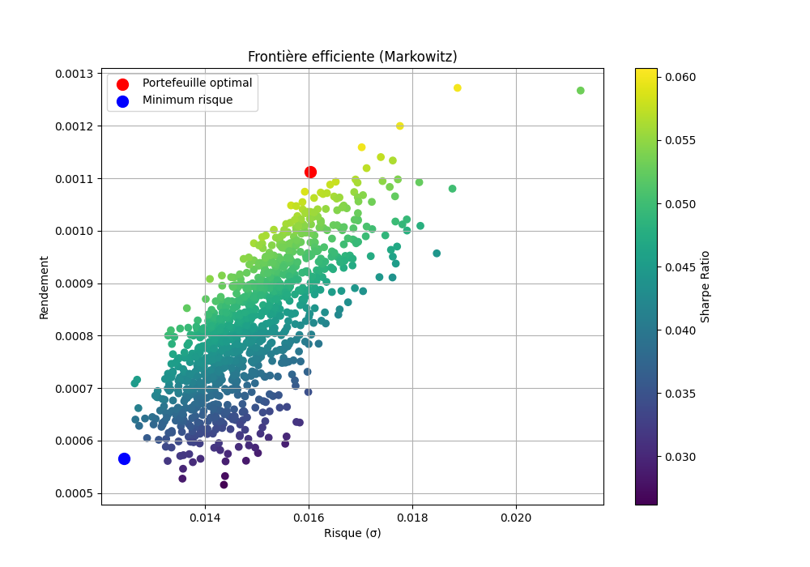
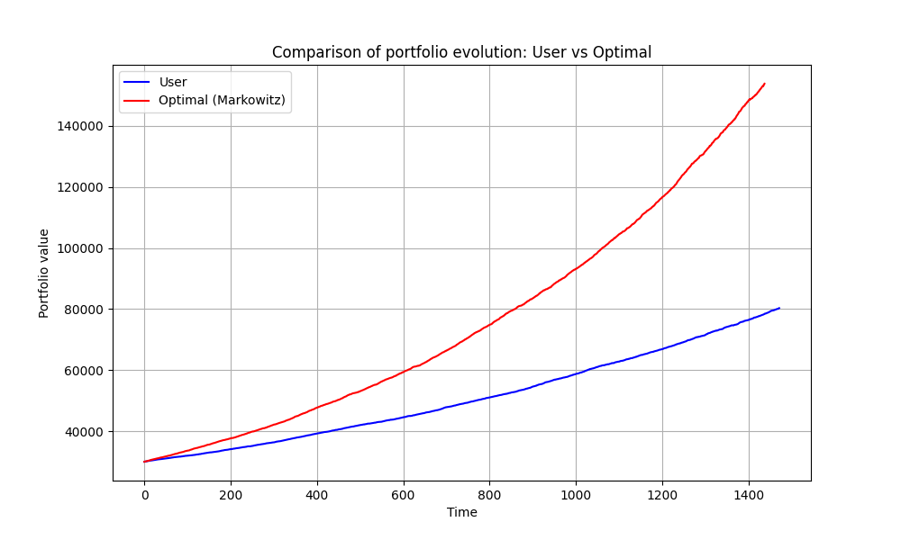

Visualisation du risque, du rendement et des stratégies d’investissement
Les graphiques permettent de transformer des résultats financiers en représentations visuelles plus faciles à interpréter. Ils jouent un rôle essentiel dans ce projet, car ils permettent de comprendre la relation entre le risque et le rendement, mais aussi d’évaluer l’efficacité des différentes stratégies d’investissement.
Ce graphique montre la relation entre le risque d’une action (mesuré par le bêta) et son rendement moyen observé. Le bêta indique la sensibilité d’une action aux variations du marché.
Chaque point correspond à une entreprise. Plus le point est à droite, plus le risque est élevé. Plus il est en haut, plus le rendement est important.
On observe une tendance générale : les actions plus risquées offrent en moyenne des rendements plus élevés, ce qui est cohérent avec la logique du CAPM.

La Security Market Line représente la relation théorique entre le risque (bêta) et le rendement attendu selon le modèle CAPM.
La droite correspond au rendement théorique. Les points représentent les rendements réels observés pour chaque entreprise.
Si une action est au-dessus de la droite, elle offre un rendement supérieur au modèle : elle peut être considérée comme sous-évaluée. À l’inverse, une action en dessous peut être surévaluée.

Ce graphique représente l’ensemble des portefeuilles possibles en fonction de leur risque (écart-type) et de leur rendement.
Chaque point correspond à une combinaison différente d’actifs. La frontière efficiente regroupe les portefeuilles les plus performants pour un niveau de risque donné.
Le point rouge représente le portefeuille optimal (meilleur ratio rendement/risque), tandis que le point bleu correspond au portefeuille le moins risqué.

Ce graphique compare l’évolution de la valeur d’un portefeuille construit par l’utilisateur avec celle du portefeuille optimal obtenu grâce à la méthode de Markowitz.
On observe que le portefeuille optimal croît plus rapidement, ce qui montre l’intérêt de l’optimisation dans la gestion d’actifs.
Cette différence de performance met en évidence l’impact des choix d’allocation sur le rendement final.

L’ensemble de ces graphiques montre que :
• le risque et le rendement sont positivement liés
• le CAPM fournit une base théorique utile
• l’optimisation de portefeuille améliore les performances
Ces résultats illustrent l’importance des outils quantitatifs en finance pour prendre des décisions d’investissement plus efficaces.